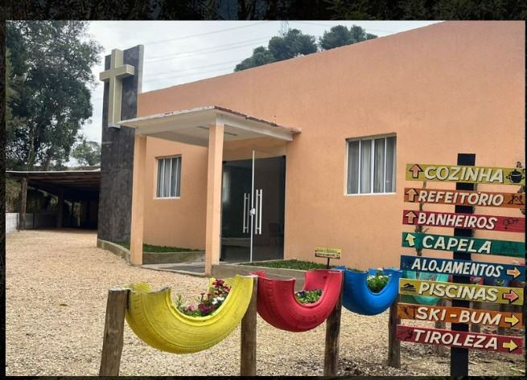

Um refúgio cercado de mata, água e silêncio — feito para igrejas viverem encontros e reencontros com Deus há mais de uma década.
A Chácara Ormelez não é apenas um espaço; é o cenário onde a sua igreja se conecta com Deus de um jeito único — cercada por mata nativa, lagos e ar puro em Bateias, Paraná.
Desde 2013 abrimos as porteiras para igrejas de todas as denominações. Aqui, cada aluguel é mais do que uma transação: é a oportunidade de criar memórias que a sua congregação vai levar para a vida toda.
"um refúgio pra sua fé respirar"
"Para o homem é impossível, mas para Deus todas as coisas são possíveis." Mateus 19:26
Da capela ao pé da tirolesa — espaços pensados para descanso, comunhão e lazer em família na fé.
💡 Toque num item com foto pra ver imagens dele na galeria
Um refúgio onde espiritualidade se funde com a natureza — para fortalecer laços, renovar energias e criar memórias divinamente especiais.
Estrutura e instalações pensadas para proporcionar o ambiente ideal para o seu grupo viver uma jornada profunda de fé.
Datas já reservadas aparecem bloqueadas. Ao clicar num dia livre, você já cai direto no WhatsApp com a data preenchida.